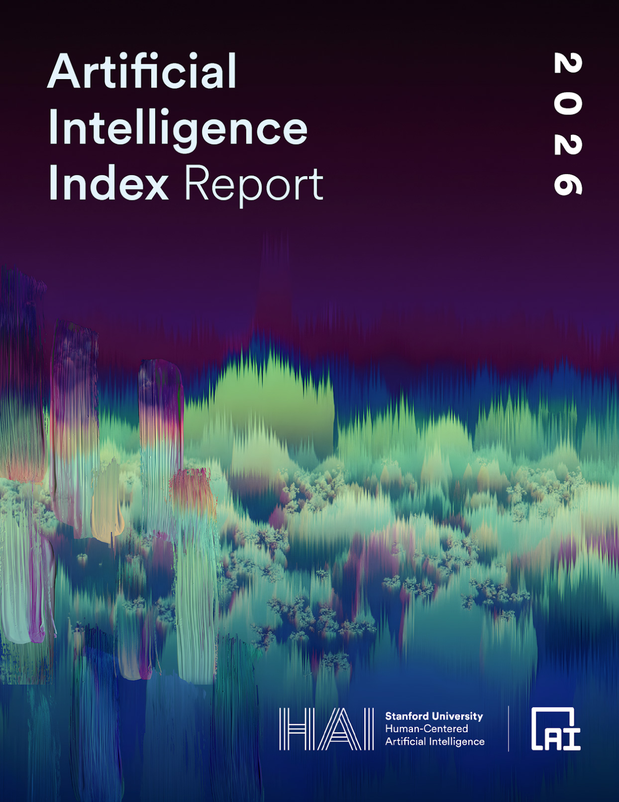
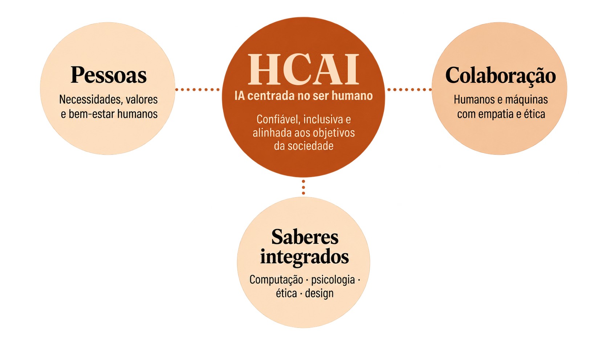

Inteligência artificial e educação
O que é IA centrada no ser humano?


Fonte: The Stanford Institute for Human-Centered AI (HAI).
What is human-centered AI?
https://hai.stanford.edu/ai-definitions/what-is-human-centered-ai
. Capa: Stanford HAI.
The 2026 AI Index Report
.
https://hai.stanford.edu/ai-index/2026-ai-index-report